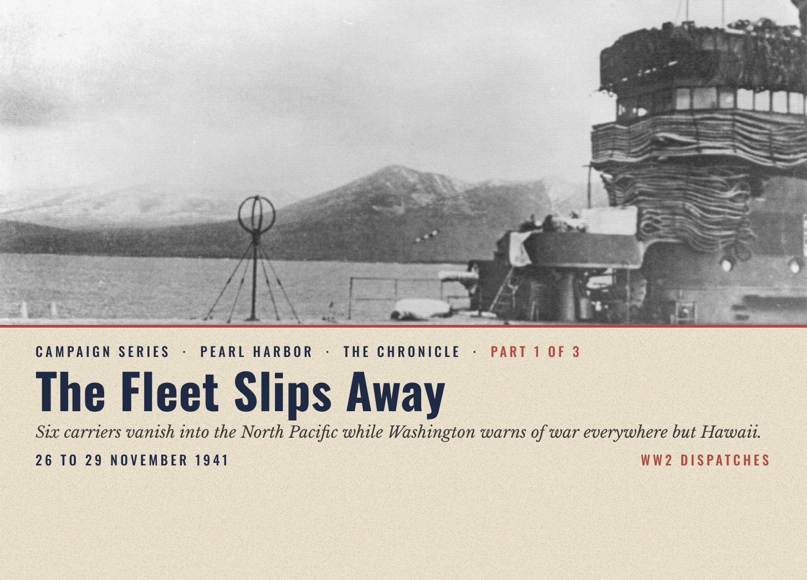
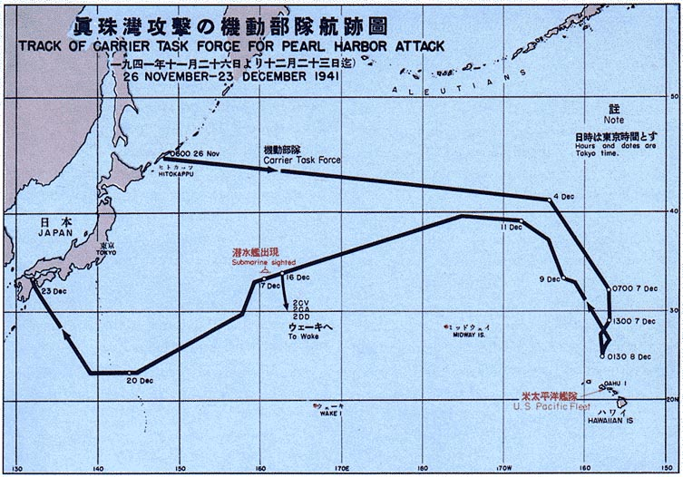
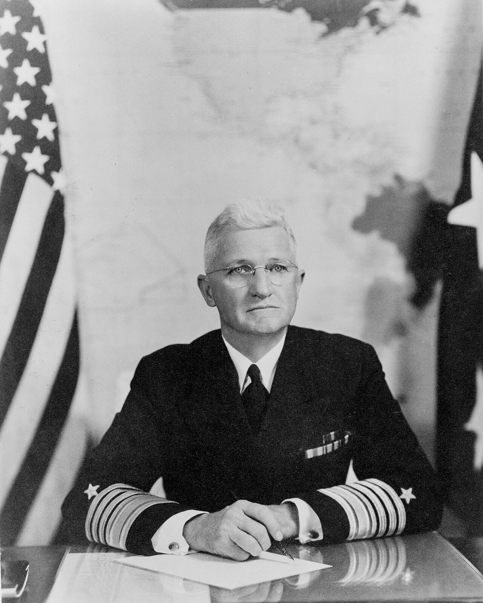
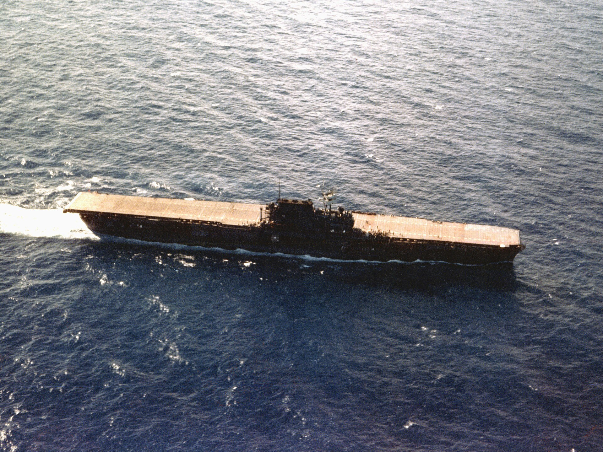
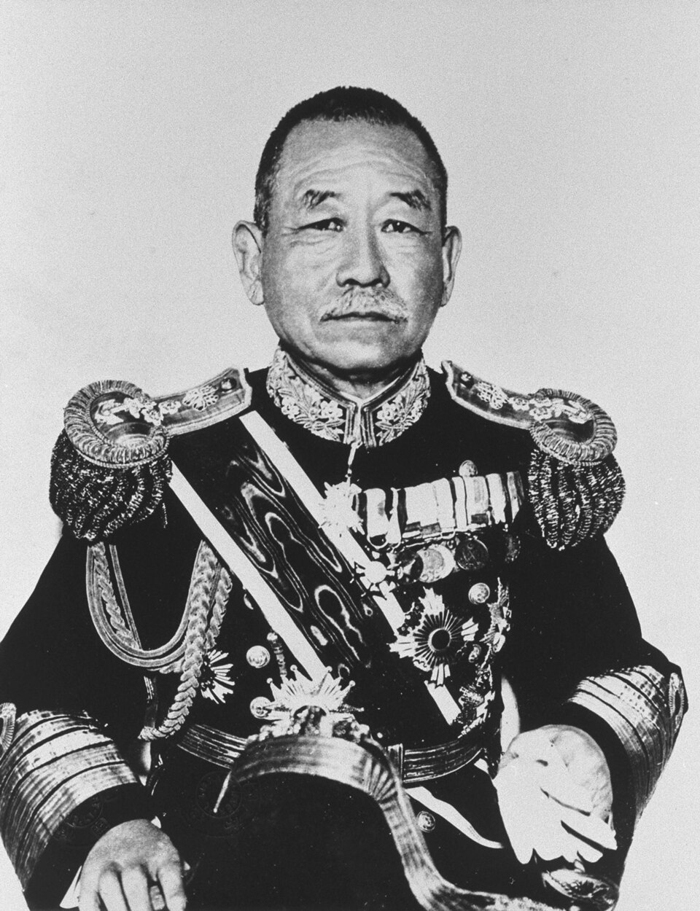
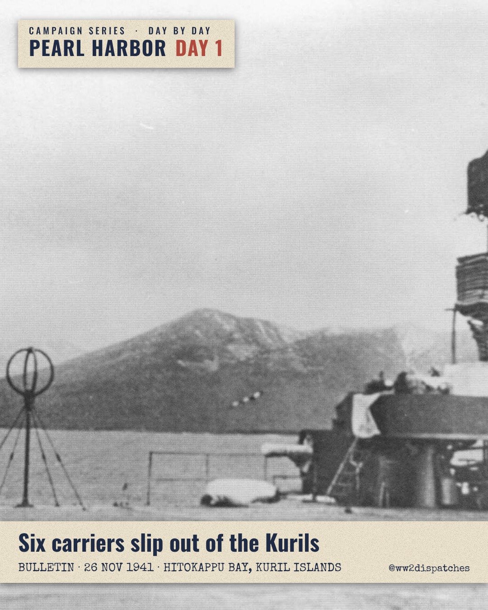
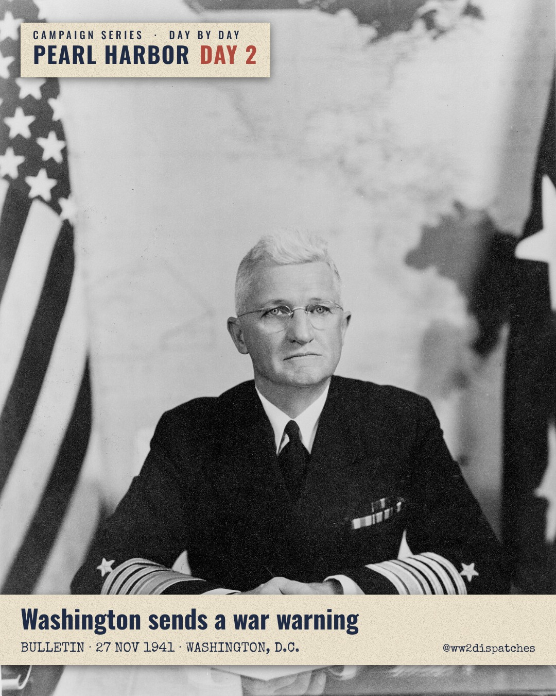
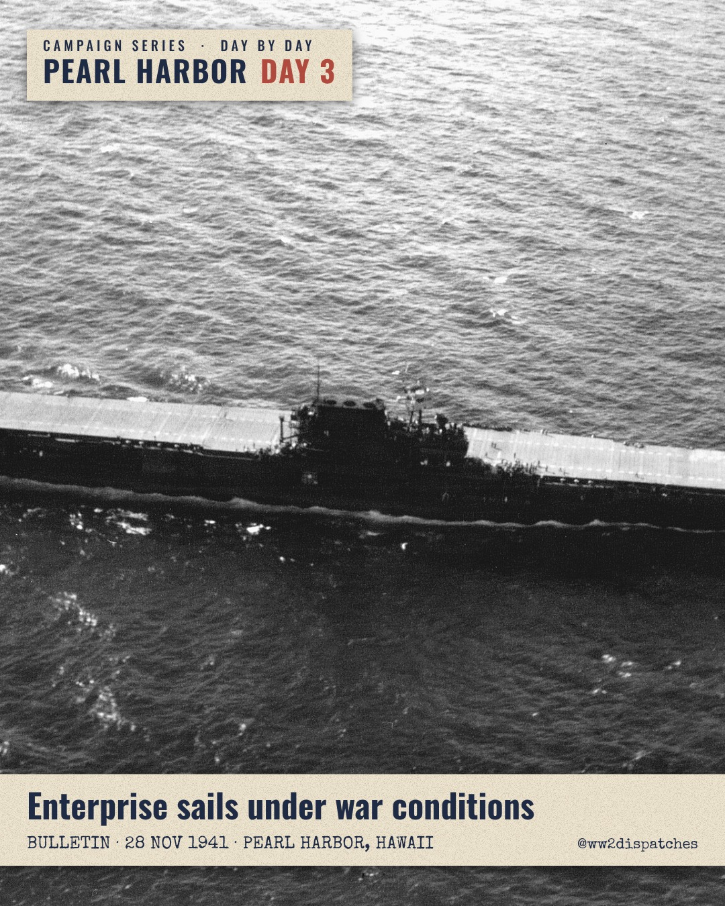
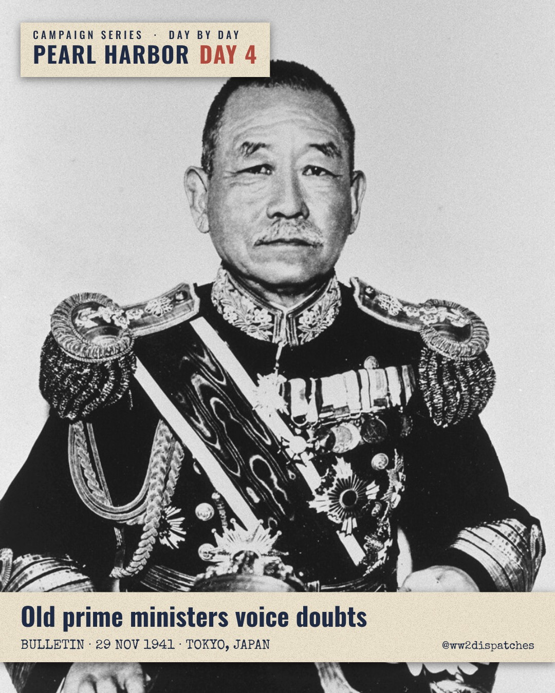

Pearl Harbor, Part 1: The Fleet Slips Away
26 to 29 November 1941. Six carriers vanish into the North Pacific while Washington warns of war everywhere but Hawaii, and in Tokyo the last voices for peace are heard and set aside.

Zuikaku at Hitokappu Bay, November 1941, before the sortie. Japanese photo, public domain (Wikimedia Commons).
On the morning of 26 November 1941, the most powerful carrier force in the world weighed anchor in a fogbound bay at the top of Japan and steamed east, into an ocean almost no ship ever crossed. Eleven days later its aircraft would be over Oahu. In between, the men who might have stopped it read the warnings, argued over them, and looked the wrong way.
This is the first of three parts on the road to Pearl Harbor. Our daily posts followed it one morning at a time, as the people living it saw it. Here we can do what they could not: lay the days side by side and see what was coming.

The Sortie
Hitokappu Bay, Kuril Islands, 26 November 1941
At six in the morning, Tokyo time, Vice Admiral Chuichi Nagumo's First Air Fleet left Hitokappu Bay on Etorofu, in the Kuril Islands. Six carriers led it: Akagi, Kaga, Soryu, Hiryu, Shokaku and Zuikaku, together carrying more than 400 aircraft. Two battleships, cruisers and destroyers screened them, and a train of tankers followed, because the route ahead had no friendly port.
The route was chosen for its emptiness. The North Pacific in late autumn is cold, rough and nearly free of merchant shipping, so the chance of being seen was small. The fleet kept radio silence the whole way, while stations at home kept up their normal traffic so that American listeners would hear nothing unusual.
What almost no one outside the fleet knew was that it could still be called back. Nagumo's orders said that if the talks in Washington succeeded, he was to turn around.
A day later, on the afternoon of 26 November in Washington, Secretary of State Cordell Hull handed Ambassador Kichisaburo Nomura and special envoy Saburo Kurusu the American proposal now known as the Hull note. It asked Japan to withdraw its forces from China and Indochina. In Tokyo it was read as an ultimatum. Foreign Minister Shigenori Togo, who had argued for more time, later wrote that it left him in despair. Hull himself told Secretary of War Henry Stimson the next morning that he was finished with diplomacy:
"I have washed my hands of it, and it is now in the hands of you and Knox, the Army and the Navy."
Cordell Hull to Henry Stimson, 27 November 1941, as recorded in Stimson's diary
The fleet was already at sea.
A War Warning
Washington, 27 November 1941
The next day, Admiral Harold Stark, the Chief of Naval Operations, sent the Pacific and Asiatic Fleets the message that would be argued over for years.
Primary document. Chief of Naval Operations to the Pacific and Asiatic Fleets, 27 November 1941
"This despatch is to be considered a war warning. Negotiations with Japan looking toward stabilization of conditions in the Pacific have ceased and an aggressive move by Japan is expected within the next few days."
The message went on to say where that move was expected: the Philippines, the Kra Peninsula of Thailand, or possibly Borneo. It ordered a defensive deployment. It did not mention Hawaii.
Admiral Husband Kimmel read it in that light. The danger, as Washington described it, lay thousands of miles to the west. The Army's warning to Lieutenant General Walter Short the same day said hostile action was possible at any moment, but also told him not to alarm the civilian population or disclose his intent. Short put his command on alert against sabotage and parked his aircraft close together, where they were easy to guard.
By then the strike force was two days out from the Kurils, on a course no American ship or patrol plane would cross.

Under War Conditions
Pearl Harbor, 28 November 1941
Not every commander in Hawaii read the warning as a problem for somebody else. Vice Admiral William Halsey took the carrier Enterprise to sea that morning on what the Marine pilots aboard had been told was a training flight. Their real job was to ferry the twelve Wildcat fighters of squadron VMF 211 to Wake Island, a coral atoll nearly 2,500 miles to the west.
Halsey had asked Kimmel how far he could go if he met Japanese ships. Use your common sense, Kimmel told him. Halsey took that as permission to shoot first. Once the task force was clear of Oahu, the carrier's captain, George Murray, put it in writing for every man aboard.
From the record. USS Enterprise, Battle Order No. 1, 28 November 1941
"The Enterprise is now operating under war conditions. At any time, day or night, we must be ready for instant action. ... Steady nerves and stout hearts are needed now."
Captain George D. Murray, commanding officer, approved by Vice Admiral William F. Halsey
Live warheads went into the torpedoes. Pilots were told to sink any ship and down any plane they met. Nine days before the attack, one American carrier was already at war. By the morning of 7 December it would be at sea, about 200 miles from Pearl Harbor, and its absence from the harbor would matter enormously.

The Last Voices
Tokyo, 29 November 1941
In Tokyo, the decision that would send the fleet the rest of the way still had to be made. On 29 November, eight former prime ministers, the senior statesmen known as the jushin, were called to the Imperial Palace to hear the government's case and give their views. It was the last moment anyone outside the cabinet and high command could speak before the Emperor decided.
They questioned Prime Minister Hideki Tojo through the morning. After lunch they spoke before the Emperor himself. Accounts of the meeting, including Tojo's own testimony after the war, show that most of them doubted Japan could win a long war, and some warned that the country's material strength and morale would not last. Only two, the retired admirals Keisuke Okada and Mitsumasa Yonai, said plainly that Japan should refrain from war and keep negotiating. They warned that the navy's supplies would drain fast.
Tojo answered that the government had tried everything, and that without war Japan's existence itself was at stake. Seizing the oil of the south would carry the war, he said. Asked how it would end, he admitted there was no definite plan.
No one in the room knew that the carriers were already three days out, somewhere in the fog of the North Pacific.

Next: Part 2, 30 November to 3 December 1941. A prince warns his brother the Emperor that the navy has doubts, Tokyo makes its final decision for war, and a coded signal tells the fleet to climb Mount Niitaka. Part 2 arrives Friday, 4 December.
Day by Day: Days 1 to 4




The daily posts behind this part, as they ran at dawn on X, Instagram, Threads and Facebook.
Sources
- Track of the carrier task force: U.S. Army, Reports of General MacArthur (1966), via Wikimedia Commons.
- The war warning: Chief of Naval Operations dispatch 272337, 27 November 1941, Pearl Harbor Attack hearings exhibits (ibiblio.org/pha).
- Hull's words to Stimson: Report of the Army Pearl Harbor Board (1944), quoting Stimson's diary (ibiblio.org/pha).
- Battle Order No. 1 and Halsey's sailing: William F. Halsey and J. Bryan III, Admiral Halsey's Story (1947); Pacific Wrecks, 28 November 1941.
- The senior statesmen's meeting: Pearl Harbor Attack hearings, appendix on the Japanese decision for war (ibiblio.org/pha).
- The sortie from Hitokappu Bay: Pacific Wrecks, 26 November 1941.